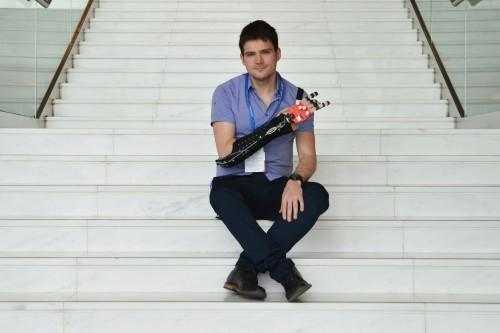

Over the course of my research, I conducted interviews with Dr. Minas Liarokapis and prosthetic engineering specialist Marina Musicus. Both provided crucial insight to the underlying principles of prosthetic design, and to their implementation in an open-source application.

Dr. Liarokapis is a senior lecturer at the Department of Mechanical Engineering at the University of Auckland in New Zealand, and is a founding member of the open-source prosthetic initiative OpenBionics. He has campaigned for producing widely- accessible, low-cost prosthetic devices and has participated in TED Talks with TEDxThessaloniki.
Marina Musicus is a certified prosthetist at FDR Center for Orthotics and Prosthetics, and develops prosthetics for patients suffering from limb loss. She specializes in mechanical engineering and was able to define for me core components of prosthetic design such as control methods and endpoint manipulation.